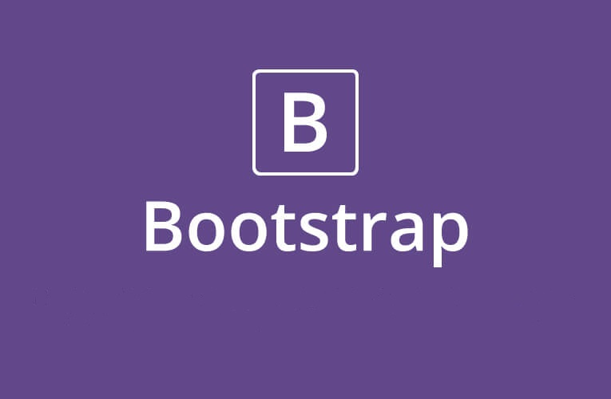

Bootstrap: the Front-End Framework
28 March 2021

Bootstrap is the world’s most popular HTML, CSS and JavaScript open source library. This toolkit is developed for quick design and building customize responsive mobile-first sites. It is featuring Sass variables and mixins, responsive grid system, extensive prebuilt components, and powerful JavaScript plugins. Bootstrap 5 is the newest version of Bootstrap.
Essentially, Bootstrap saves you from writing lots of CSS code, giving you more time to spend on designing webpages. It’s also free! It’s currently hosted on GitHub and can be downloaded easily from the official site.
1. Bootstrap as the go-to for web developers
1. Responsive grid
No more spending hours coding your own grid—Bootstrap comes with its own grid system predefined. Now, you can get straight to filling your containers with content. Defining custom breakpoints for each column is a snap using their extra small, small, medium, large, and extra large breaks. You can also simply stick to the default as it might already meet the needs of your site.
2. Responsive images
Bootstrap comes with its own code for automatically resizing images based on the current screen size. Just add the .img-responsive class to your images, and the predefined CSS rules take care of the rest. It can even change the shape of your images with the addition of classes like img-circle and img-rounded, and that’s without going back and forth between the code and your design software.
3. Components
Bootstrap comes with a whole barrelful of components you can easily tack onto your web page, including:
- Navigation bars
- Dropdowns
- Progress bars
- Thumbnails
Not only is it a breeze to add eye-catching design elements to your webpage, you’ll also be able to rest assured knowing that every one of them will look great no matter the screen size or device used to view them. That’s a lot of ready-made functionality right at your fingertips. For a more complete list of addable features, check out the component documentation.
4. JavaScript
Bootstrap also allows developers to take advantage of over a dozen custom JQuery plugins. This library gives you even more room to play with interactivity, offering up easy solutions for modal popups, transitions, image carousels, and—one of my personal favorites—a plugin called scrollspy, which automatically updates your navigation bar as you scroll through a page.
5. Documentation
Every piece of code is described and explained in explicit detail on their website. Explanations also include code samples for basic implementation, simplifying the process for even the most beginner of beginners. All you need to do is choose a component, copy and paste the code into your page, and tweak from there.
6. Customizability
One of the main critiques when it comes to frameworks such as Bootstrap is their size—the weight they throw around can really slow down your application upon first load. The current version of Bootstrap’s CSS file, for example, is a whopping 119 KB. While this may not seem especially large compared to image and video files, for a CSS file, that’s enormous. What it allows you to do to combat this, however, is customize which functionality you want to include in your download. By simply going to their Customize and Download page, you can check off the features you won’t need for your application, trimming the weight off your file and saving your users the additional load time.
7. Community
As with so many open-source projects, Bootstrap has a large community of designers and developers behind it. Being hosted on GitHub makes it easy for developers to modify and contribute to Bootstrap’s codebase. It also makes it easy for people to collaborate, lend their advice, and interact with peers and fellow users. Bootstrap has an active Twitter page, a Bootstrap blog, and even a dedicated Slack room. And that doesn’t even get into the wealth of developers willing to help with technical problems on Stack Overflow, where all questions can be found under the bootstrap-tag.
8. External templates
As its popularity grew, people started creating templates based on Bootstrap in order to accelerate the web development process even further. There are many websites out there dedicated to sharing and buying custom templates based on Bootstrap. For example: W3Schools Bootstrap templates, Start Bootstrap templates or Wrap Bootstrap templates.
2. Disadvantages of Bootstrap
But not everything is as simple as it seems at first glance.
Its syntax is confusing.
Before you become familiar with Bootstrap, some of its syntax can be confusing. When using the grid system, for example, in order to make a column that takes up a third of the screen, you have to add the .col-md-4 class to it. “Wait—4? Where did this 4 come from?!” Undoubtedly, the four might lead you to believe the column would take up a quarter of the screen—not a third. While this syntax does make sense (Bootstrap uses a 12-column system, and 4 is a third of 12), it can be unintuitive for those new to the whole process.
Its files are too big.
As mentioned earlier, Bootstrap files can be a bit, well, large to account for the sheer functionality offered by its framework. This can lead to an increase in load times for websites, especially on slower networks. Beginners might have a hard time identifying and fixing this issue; however, as mentioned above, the customize tool on Bootstrap’s website can help eliminate any unnecessary code for functions you’ll never use. So have it your way—just pick out the bits you need and leave the rest. (Of course, this task gets easier the more you know about coding.)
It keeps me from actually learning code.
There’s always the risk that, by using Bootstrap, you’ll get into a cycle of simply recycling existing code without actually understanding it. By spending the time to really learn what you’re doing, however, you can use Bootstrap as a way of accelerating your learning, rather than hindering it.
It keeps me from actually learning code.
There’s always the risk that, by using Bootstrap, you’ll get into a cycle of simply recycling existing code without actually understanding it. By spending the time to really learn what you’re doing, however, you can use Bootstrap as a way of accelerating your learning, rather than hindering it.
3. In conclusion
So, Bootstrap is a powerful tool that allows a developer to get up and running quickly and painlessly. It makes it easy to integrate many great features that enrich a user’s interaction with the web without having to code them from scratch. Bootstrap is immensely popular and has been used to build some great websites. You can see it on MongoDB’s website, the NASA website, or even FIFA’s. It's absolutely necessary to know Bootstrap if you want to build career in Web Development.